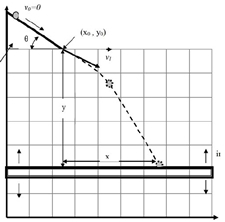

| Objetivo: |
Este experimento consiste en lanzar un balín desde una rampa colocada a cierta altura, y se medirá la distancia horizontal desde la base de la rampa hasta el punto de caída del balín. Determinar las variables dinámicas del experimento. |
| Material |
| Introducción: |
| El tiro parabólico se compone de 2 movimientos simultáneos: uno horizontal con velocidad constante y otro vertical con
movimiento uniformemente acelerado, que es afectado por la aceleración de la gravedad y se expresa en función del tiempo.
|
| Desarrollo Experimental: |
Preparación:
Experimento 1:
|
| Resultados y Conclusiones: |
|
Para la realización del reporte de este experimento, considere el punto de lanzamiento del balín, que es el punto donde abandona la
rampa, con coordenadas x0= y0= 0. 1) Construya una gráfica x vs. y en papel cartesiano, y ajuste los puntos experimentales por el método de mínimos cuadrados. Identifique los parámetros de ajuste con las variables cinemáticas del movimiento. Trace la curva ajustada en la gráfica x vs. y. 2) Determine el valor de la velocidad v0(magnitud y dirección) con la cual el balín es lanzado desde la rampa. Use el valor de la gravedad g = 9.8 m/ s. 3) Determine el tiempo y la velocidad v con la cual el balín cae al piso para cada una de las diferentes alturas consideradas. 4) Con la geometría de la rampa, determine el valor de la velocidad v0 con la cual el balín es lanzado desde la rampa y compárelo con el valor obtenido en la Punto 2). 5) Considere y discuta las posibles causas por las cuales ambos cálculos dan un resultado diferente para la misma cantidad. |
| Figura 1: Lanzamiento del balín mediante plano inclinado |
|  |